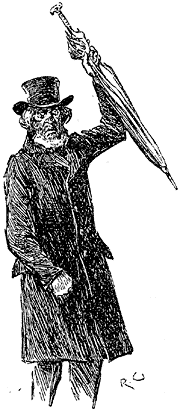

Three weeks had passed since Jefferson Hope and his comrades had departed from Salt Lake City. John Ferrier's heart was sore within him when he thought of the young man's return, and of the impending loss of his adopted child. Yet her bright and happy face reconciled him to the arrangement more than any argument could have done. He had always determined, deep down in his resolute heart, that nothing would ever induce him to allow his daughter to wed a Mormon. Such a marriage he regarded as no marriage at all, but as a shame and a disgrace. Whatever he might think of the Mormon doctrines, upon that one point he was inflexible. He had to seal his mouth on the subject, however, for to express an unorthodox opinion was a dangerous matter in those days in the Land of the Saints.
Yes, a dangerous matter—so dangerous that even the most saintly dared only whisper their religious opinions with bated breath, lest something which fell from their lips might be misconstrued, and bring down a swift retribution upon them. The victims of persecution had now turned persecutors on their own account, and persecutors of the most terrible description. Not the Inquisition of Seville, nor the German Vehmgericht, nor the Secret Societies of Italy, were ever able to put a more formidable machinery in motion than that which cast a cloud over the State of Utah.
Its invisibility, and the mystery which was attached to it, made this organization doubly terrible. It appeared to be omniscient and omnipotent, and yet was neither seen nor heard. The man who held out against the Church vanished away, and none knew whither he had gone or what had befallen him. His wife and his children awaited him at home, but no father ever returned to tell them how he had fared at the hands of his secret judges. A rash word or a hasty act was followed by annihilation, and yet none knew what the nature might be of this terrible power which was suspended over them. No wonder that men went about in fear and trembling, and that even in the heart of the wilderness they dared not whisper the doubts which oppressed them.
At first this vague and terrible power was exercised only upon the recalcitrants who, having embraced the Mormon faith, wished afterwards to pervert or to abandon it. Soon, however, it took a wider range. The supply of adult women was running short, and polygamy without a female population on which to draw was a barren doctrine indeed. Strange rumours began to be bandied about—rumours of murdered immigrants and rifled camps in regions where Indians had never been seen. Fresh women appeared in the harems of the Elders—women who pined and wept, and bore upon their faces the traces of an unextinguishable horror. Belated wanderers upon the mountains spoke of gangs of armed men, masked, stealthy, and noiseless, who flitted by them in the darkness. These tales and rumours took substance and shape and were corroborated and re-corroborated, until they resolved themselves into a definite name. To this day, in the lonely ranches of the West, the name of the Danite Band, or the Avenging Angels, is a sinister and an ill-omened one.
Fuller knowledge of the organization which produced such terrible results served to increase rather than to lessen the horror which it inspired in the minds of men. None knew who belonged to this ruthless society. The names of the participators in the deeds of blood and violence done under the name of religion were kept profoundly secret. The very friend to whom you communicated your misgivings as to the Prophet and his mission might be one of those who would come forth at night with fire and sword to exact a terrible reparation. Hence every man feared his neighbour, and none spoke of the things which were nearest his heart.
One fine morning John Ferrier was about to set out to his wheat-fields, when he heard the click of the latch, and, looking through the window, saw a stout, sandy-haired, middle-aged man coming up the pathway. His heart leapt to his mouth, for this was none other than the great Brigham Young himself. Full of trepidation—for he knew that such a visit boded him little good—Ferrier ran to the door to greet the Mormon chief. The latter, however, received his salutations coldly, and followed him with a stern face into the sitting-room.
"Brother Ferrier," he said, taking a seat, and eyeing the farmer keenly from under his light-coloured eyelashes, "the true believers have been good friends to you. We picked you up when you were starving in the desert, we shared our food with you, led you safe to the Chosen Valley, gave you a goodly share of land, and allowed you to wax rich under our protection. Is not this so?"
"It is so," answered John Ferrier.
"In return for all this we asked but one condition: that was, that you should embrace the true faith, and conform in every way to its usages. This you promised to do, and this, if common report says truly, you have neglected."
"And how have I neglected it?" asked Ferrier, throwing out his hands in expostulation. "Have I not given to the common fund? Have I not attended at the Temple? Have I not——?"
"Where are your wives?" asked Young, looking round him. "Call them in that I may greet them."
"It is true that I have not married," Ferrier answered. "But women were few, and there were many who had better claims than I. I was not a lonely man; I had my daughter to attend to my wants."
"It is of that daughter that I would speak to you," said the leader of the Mormons. "She has grown to be the flower of Utah, and has found favour in the eyes of many who are high in the land."
John Ferrier groaned internally.
"There are stories of her which I would fain disbelieve—stories that she is sealed to some Gentile. This must be the gossip of idle tongues. What is the thirteenth rule in the code of the sainted Joseph Smith? 'Let every maiden of the true faith marry one of the elect; for if she wed a Gentile, she commits a grievous sin.' This being so, it is impossible that you, who profess the holy creed, should suffer your daughter to violate it."
John Ferrier made no answer, but he played nervously with his riding-whip.
"Upon this one point your whole faith shall be tested—so it has been decided in the Sacred Council of Four. The girl is young, and we would not have her wed grey hairs, neither would we deprive her of all choice. We Elders have many heifers, but our children must also be provided. Stangerson has a son, and Drebber has a son, and either of them would gladly welcome your daughter to their house. Let her choose between them. They are young and rich, and of the true faith. What say you to that?"
Ferrier remained silent for some little time with his brows knitted.
"You will give us time," he said at last. "My daughter is very young—she is scarce of an age to marry."
"She shall have a month to choose," said Young, rising from his seat. "At the end of that time she shall give her answer."
He was passing through the door, when he turned, with flushed face and flashing eyes. "It were better for you, John Ferrier," he thundered, "that you and she were now lying blanched skeletons upon the Sierra Blanco, than that you should put your weak wills against the orders of the Holy Four!"
With a threatening gesture of his hand, he turned from the door, and Ferrier heard his heavy steps scrunching along the shingly path.
He was still sitting with his elbow upon his knee, considering how he should broach the matter to his daughter, when a soft hand was laid upon his, and looking up, he saw her standing beside him. One glance at her pale, frightened face showed him that she had heard what had passed.
"I could not help it," she said, in answer to his look. "His voice rang through the house. Oh, father, father, what shall we do?"
"Don't you scare yourself," he answered, drawing her to him, and passing his broad, rough hand caressingly over her chestnut hair. "We'll fix it up somehow or another. You don't find your fancy kind o' lessening for this chap, do you?"
A sob and a squeeze of his hand was her only answer.
"No; of course not. I shouldn't care to hear you say you did. He's a likely lad, and he's a Christian, which is more than these folk here, in spite o' all their praying and preaching. There's a party starting for Nevada to-morrow, and I'll manage to send him a message letting him know the hole we are in. If I know anything o' that young man, he'll be back here with a speed that would whip electro-telegraphs."
Lucy laughed through her tears at her father's description.
"When he comes, he will advise us for the best. But it is for you that I am frightened, dear. One hears—one hears such dreadful stories about those who oppose the Prophet: something terrible always happens to them."
"But we haven't opposed him yet," her father answered. "It will be time to look out for squalls when we do. We have a clear month before us; at the end of that, I guess we had best shin out of Utah."
"Leave Utah!"
"That's about the size of it."
"But the farm?"
"We will raise as much as we can in money, and let the rest go. To tell the truth, Lucy, it isn't the first time I have thought of doing it. I don't care about knuckling under to any man, as these folk do to their darned Prophet. I'm a free-born American, and it's all new to me. Guess I'm too old to learn. If he comes browsing about this farm, he might chance to run up against a charge of buck-shot travelling in the opposite direction."
"But they won't let us leave," his daughter objected.
"Wait till Jefferson comes, and we'll soon manage that. In the meantime, don't you fret yourself, my dearie, and don't get your eyes swelled up, else he'll be walking into me when he sees you. There's nothing to be afeard about and there's no danger at all."
John Ferrier uttered these consoling remarks in a very confident tone, but she could not help observing that he paid unusual care to the fastening of the doors that night, and that he carefully cleaned and loaded the rusty old shot-gun which hung upon the wall of his bedroom.